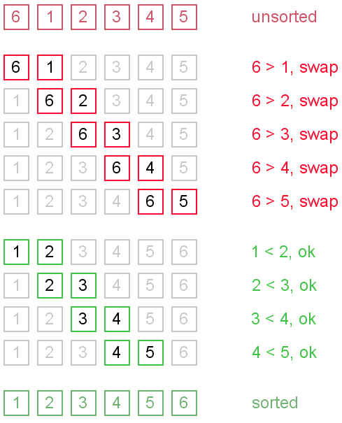

Bubble Sort
Definition
Bubble sort is a comparison sorting algorithm which will run through an array and compare elements in pairs. If a pair of elements are incorrectly ordered, then the algorithm will swap those elements. This procedure is repeated until no more swaps are required, thus indicating that the list is correctly sorted.
Example
Animation
Implementation
Bubble sort works as follows:
- Take the first two elements of an array and place the larger element at the higher index.
- This process is repeated until the largest element is not reached at the final index.
- Start again at first index of the array up to n-1 index.
- This process is repeated until all elements are correctly sorted.
Functions
Implementing Bubble Sort in a program can be done within one function called bubble();:
- bubble();
This function takes the unsorted array and traverses it from 0 to the length-1 index of the array. The selected element is compared to the next element and the elements are swapped if the next element is of a lesser value. The largest value is eventually placed at the largest index. This process repeats until all the elements are correctly sorted.
Pseudocode
function bubble ( array arr, size ){
for index_1 ( 0 to size of arr )
for index_2 ( 1 to size of arr – index_1 )
if index_2 – 1 of arr > index_2 of arr
swap ( arr, index_2 – 1, index_2 )
}
Complexity
In its best case, time complexity of bubble sort is O(N). This performance can only be achieved over a currently sorted list. Bubble sort has a average and worst-case time complexity of O(N ^ 2). N is based on the amount of sorted items. The positioning of the elements determines the performance of the algorithm. A large element at the beginning of the list does not affect the performance of the algorithm. However, small elements at the end of the list take a considerable amount of swapping time, thus affecting the time performance.
Advantages of using Bubble Sort
Bubble sort is a simplistic algorithm to implement. There is minimal overhead due to data being sorted in-place. When data is correctly sorted, the data is in memory and ready to be processed efficiently.
Disadvantages of using Bubble Sort
Bubble sort’s computational time complexity is the source of its disadvantages. The average time of completion increases vastly as the number of unsorted elements within the list increases. The sorting process requires multiple passes over the data, which imposes an inefficient completion time.